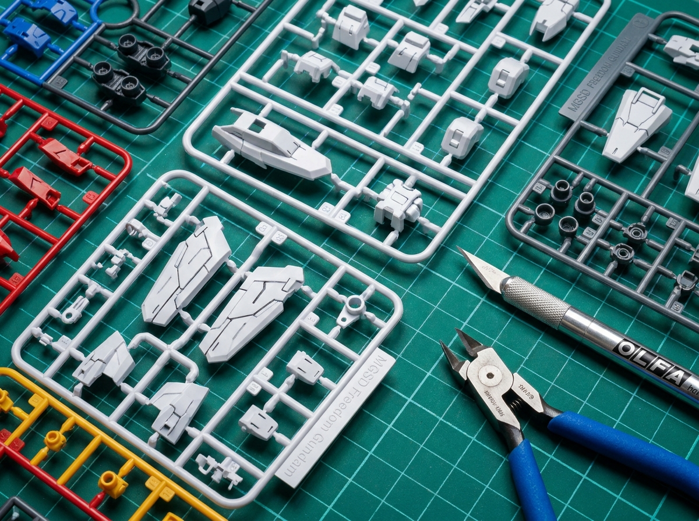

First Impression
Ketika Bandai Spirits mengumumkan lini Master Grade Super Deformed (MGSD), reaksi komunitas Gunpla langsung terpecah. Sebagian antusias dengan konsep "MG in SD body", sebagian lain skeptis terhadap value propositionnya. Setelah membangun Freedom Gundam ini, kami bisa bilang: hasilnya cukup mengejutkan.
Box art-nya sendiri sudah memberikan kesan premium. Ilustrasi dynamic Freedom Gundam dengan wings of light-nya yang ikonik langsung menarik perhatian. Di dalam box, runner tersusun rapi dengan part count yang lebih tinggi dari SD grade pada umumnya — total sekitar 280+ parts dengan color separation yang excellent.

Runner parts MGSD Freedom - color separation yang excellent untuk kelas SD
Inner Frame & Engineering
Inilah yang membuat MGSD berbeda dari SD grade biasa. Freedom Gundam ini menggunakan full inner frame system yang biasanya hanya ditemukan di MG atau PG. Beberapa highlight teknis:
- Die-cast joints di beberapa titik kritis (paha, bahu) untuk stabilitas pose.
- Poly-cap system yang sudah ditinggalkan di MG modern, di sini masih digunakan dengan baik.
- Two-tone plastic molding untuk beberapa part yang mengurangi kebutuhan painting.
- Pre-colored runners dengan finishing semi-gloss yang sangat mirip dengan aslinya.
PRO TIP:
Jangan skip nub marks di MGSD! Plastic quality-nya sedikit lebih keras dari MG biasa, jadi pastikan side cutter Anda tajam dan potong dengan angle 45 derajat untuk hasil clean.
Articulation & Poseability
Untuk ukuran SD, artikulasi Freedom Gundam ini luar biasa. Standing pose sudah stabil tanpa stand, dan dynamic pose dengan beam rifle atau shield juga sangat solid. Beberapa highlight:
Dynamic Action
Action base compatible
Wings of Light
Effect parts included
Full Weaponry
Beam rifle, shield, sabers
Pro & Kontra
KELEBIHAN
- Inner frame quality setara MG
- Color separation tanpa painting
- Artikulasi mengejutkan untuk SD
- Effect parts wings of light included
- Build time relatif cepat (3-4 jam)
KEKURANGAN
- Harga premium (Rp 450.000)
- Beberapa seam line sulit dijangkau
- Sticker sheet cukup banyak
- Tidak include stand base
Verdict
MGSD Freedom Gundam adalah pilihan tepat untuk builder yang ingin merasakan sensasi build MG dalam format yang lebih compact dan cepat. Build experience-nya satisfying, hasilnya juga impressive, terutama saat dipajang dengan wings of light effect parts.
Namun, dengan harga Rp 450.000, value proposition-nya jadi debatable. Untuk budget yang sama, Anda bisa mendapat MG standar dengan skala lebih besar. Tapi kalau Anda kolektor SD atau punya space display terbatas, MGSD Freedom adalah best-in-class.
FINAL VERDICT
RECOMMENDED ⭐
Untuk SD enthusiast dan kolektor yang mengutamakan display piece